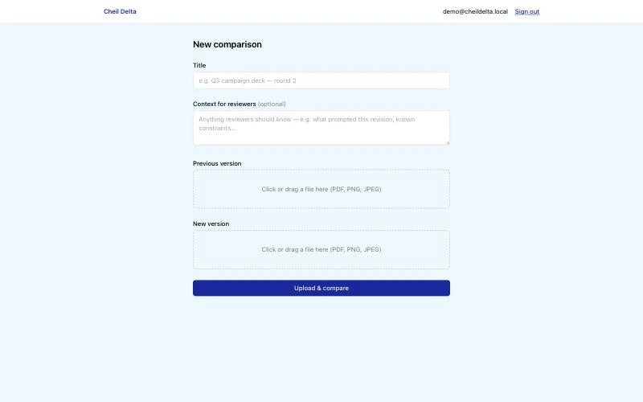
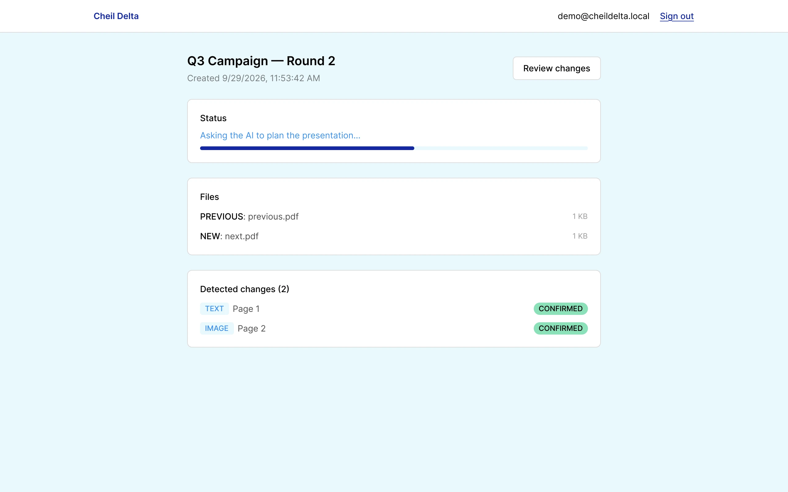
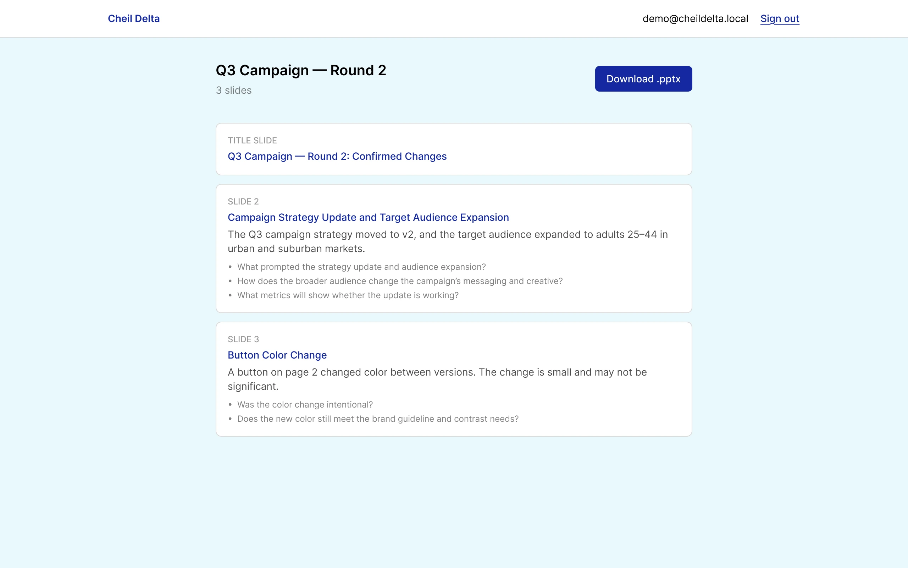
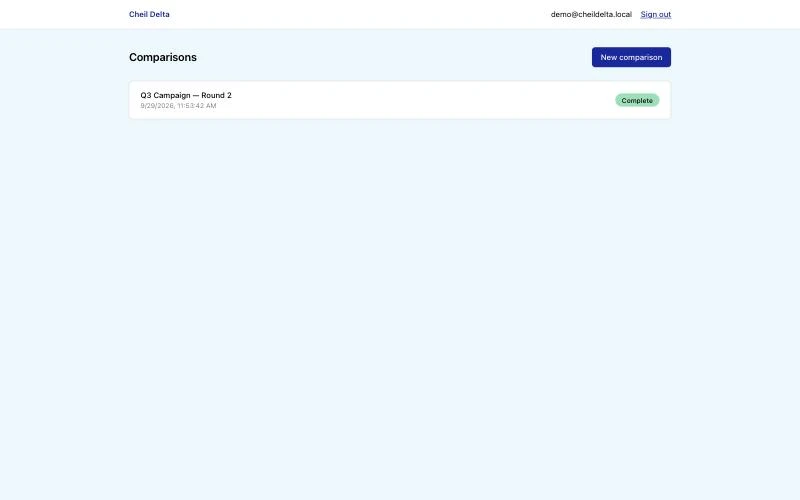

Cheil Delta
An internal AI tool that turns a 45-minute task into 10 minutes, so more time goes into design instead of deck-building.

- Role
- Product design and development
- Duration
- About 3 days, at Cheil USA (Samsung)
- Team
- Solo
- Tools
- Claude Code, Next.js, TypeScript, PostgreSQL; Claude, OpenAI, Ollama
01 The problem
The deck was necessary. It was never the valuable part.
On fast-turnaround creative projects, every version change, even a small one, had to be explained to leadership or another department before it could move forward. Building that explanation into a presentable deck took about 45 minutes every time: screenshotting both versions, spotting every difference by hand, writing it up, formatting slides.
Those 45 minutes came straight out of design time, on projects that were already tight on schedule.
45 min
to build one comparison deck by hand
- Screenshot both versions
- Spot every difference manually
- Write up each change
- Format the slides
02 What it does
Two files in, a reviewed deck out.
Cheil Delta compares two versions of a creative or marketing file (PDF, PNG, or JPEG), detects what changed with a deterministic diff engine, and uses an AI model to explain each change in plain language.
Then a person reviews every finding, confirming or correcting it, and only after that does the tool build a branded PowerPoint review deck. Nothing counts as approved until a human confirms it, and the AI never touches file generation; the deck is built by ordinary app code from the approved plan.




03 See it in use
The whole flow, start to finish.
A recording of Cheil Delta comparing two versions of a file, walking through review, and generating the deck.
04 How it’s built
Four small AI jobs, not one freeform agent.
The pipeline runs in four bounded AI stages. Each one is called directly with pre-built, scoped context; the AI is never allowed to call arbitrary tools or take open-ended actions. Every stage’s output is checked against a strict schema before it’s trusted, with an automatic retry when it doesn’t fit.
The AI layer is provider-agnostic: the same interface runs on Claude, OpenAI, or a free local model through Ollama. A fallback mode chains providers and fails over to the next one if a call errors, so one API outage doesn’t stop the pipeline, and cost is capped per session so a runaway loop can’t run up a bill.
- CodeDiff engine Renders both files and detects every text and image change, deterministically.
- AI 1Classifier Scores whether a detected change is meaningful.
- AI 2Explainer Writes a plain-language summary of what changed.
- AI 3Relationship mapper Flags connections between multiple changes.
- PersonHuman review Confirm, edit, reject, or mark minor, for every change.
- AI 4Review-deck planner Turns confirmed findings into a slide plan, only after sign-off.
- CodeDeck builder Generates the .pptx from the approved plan; the AI never writes the file.
05 Challenge
A guarantee, not a hint.
The biggest architectural decision in the project came from a bug I caught while using the tool myself.
The hurdle
When I edited an AI-flagged finding during review, the edit wasn’t reliably making it into the final deck. The first fix was to tell the AI more firmly, in the prompt, to keep edited text exactly. But a prompt is a request, not a guarantee, and a smaller or local model won’t always follow it.
How I got past it
I moved the rule out of the prompt and into the code: reviewer edits are now enforced deterministically after the AI runs. The same principle went everywhere it mattered. A slide’s header is derived from the same fact as its body so the two can’t drift apart, internal database IDs are stripped from AI output before anyone sees them, and AI summaries are capped and cleaned instead of trusted to stay short.
What it taught me
If something has to be true, the system should make it true. The AI can suggest; the code decides.
06 Built through real usage
Most of the fixes came from using it, not from a spec sheet.
Almost every meaningful improvement started with a real problem I hit while using the tool, traced back to its actual cause instead of papered over.
- Stretched images in decksTraced to a real bug in the presentation library, and fixed there rather than worked around.
- Long, garbled AI summariesThe model was faithfully quoting corrupted source text; summaries now paraphrase around it and are capped.
- A “processing” label that looked frozenReplaced with a percentage progress bar tied to the actual pipeline stages.
- Regenerating a deck overwrote the last oneReplaced with full version history, so nothing gets lost.
07 Results
From 45 minutes to 10.
A leadership-ready comparison deck now takes about 10 minutes instead of 45, and the time goes back into design.
- 45 minutes → 10 minutesTime to build a leadership-ready comparison deck.
- Zero-cost testingA free local model (Ollama) let me iterate and load-test with no API cost, which surfaced real gaps: truncated output, out-of-range confidence scores, inconsistent image descriptions. Each became a concrete fix.
- Contained changes, not rewritesBecause the AI layer is provider-agnostic, adding vision support, deck versioning, and provider failover were each small, contained changes.
- Demo-ready for freeA second, serverless deployment path with a scheduled job as a safety net lets the project be deployed and demoed without a payment method anywhere.
08 Takeaway
Where it succeeds: design time goes back to design.
Cheil Delta is a UX project whose user is the design team itself. The goal was never to automate judgment; it was to remove the busywork around it, while keeping a person in charge of every decision that reaches leadership.
Built with
Claude Code, Next.js, TypeScript, PostgreSQL, and a pluggable AI layer for Claude, OpenAI, and local models via Ollama.
Design principle
Human confirmation before anything ships, and code, not prompts, for anything that must be true.